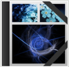
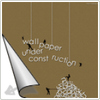
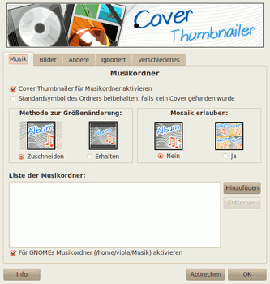

Cover Thumbnailer
Dieser Artikel wurde für die folgenden Ubuntu-Versionen getestet:
Ubuntu 14.04 Trusty Tahr
Zum Verständnis dieses Artikels sind folgende Seiten hilfreich:
Cover Thumbnailer  schließt eine Lücke in Nautilus, dem Dateimanager von GNOME. Im Gegensatz zu Dolphin (KDE) bietet Nautilus bei Ordnersymbolen keine Vorschau (Thumbnails) für den Inhalt eines Ordners. Im Internet finden sich zwar zahlreiche Skripte, um anstelle der normalen Icons eine im Ordner enthaltene Grafik zu verwenden, doch sind diese aus folgenden Gründen nicht die ideale Lösung des Problems:
schließt eine Lücke in Nautilus, dem Dateimanager von GNOME. Im Gegensatz zu Dolphin (KDE) bietet Nautilus bei Ordnersymbolen keine Vorschau (Thumbnails) für den Inhalt eines Ordners. Im Internet finden sich zwar zahlreiche Skripte, um anstelle der normalen Icons eine im Ordner enthaltene Grafik zu verwenden, doch sind diese aus folgenden Gründen nicht die ideale Lösung des Problems:
Ordner und Datei sind kaum noch unterscheidbar, da sich diese in der Miniaturansicht sehr ähnlich sehen
diese Skripte müssen nach dem Erstellen neuer Ordner stets neu ausgeführt werden
die Änderungen sind oft nur schwierig rückgängig zu machen
|  |  | |
| Musik | Bilder | Andere |
Beim Programm Cover Thumbnailer treten diese Probleme nicht auf. Gerade bei umfangreichen Musik- und Bildersammlungen steigern die passenden Cover- oder Vorschaubilder die Übersicht im Dateimanager enorm.
Installation¶

Das Programm ist nicht in den offiziellen Paketquellen enthalten. Zur Installation muss man daher auf ein "Personal Package Archiv" (PPA) [1] ausweichen.
Hinweis:
Cover Thumbnailer funktioniert mit Nautilus 3.x erst ab Version 0.8.3. Für ältere Nautilus-Versionen wird die Version 0.8.2 empfohlen.
PPA¶
Unterstützt werden Ubuntu-Versionen bis einschließlich Ubuntu 15.04. In diesem PPA sind einige weitere Programme enthalten. Um Problemen mit den offiziellen Paketquellen vorzubeugen, wird empfohlen, das PPA nach der Installation wieder zu deaktivieren.
Adresszeile zum Hinzufügen des PPAs:
ppa:flozz/flozz
Hinweis!
Zusätzliche Fremdquellen können das System gefährden.
Ein PPA unterstützt nicht zwangsläufig alle Ubuntu-Versionen. Weitere Informationen sind der  PPA-Beschreibung des Eigentümers/Teams flozz zu entnehmen.
PPA-Beschreibung des Eigentümers/Teams flozz zu entnehmen.
Damit Pakete aus dem PPA genutzt werden können, müssen die Paketquellen neu eingelesen werden.
Nach dem Aktualisieren der Paketquellen kann das Programm über das folgende Paket installiert [2] werden:
cover-thumbnailer (ppa)
 mit apturl
mit apturl
Paketliste zum Kopieren:
sudo apt-get install cover-thumbnailer
sudo aptitude install cover-thumbnailer
Manuell¶
Bei neueren Ubuntu-Versionen lädt man den Quellcode des Python-Programms als Archivdatei cover-thumbnailer_0.8.3_src.tar.gz  herunter, entpackt diese [3], wechselt in den beim Entpacken entstandenen Ordner und führt folgende Befehl aus:
herunter, entpackt diese [3], wechselt in den beim Entpacken entstandenen Ordner und führt folgende Befehl aus:
sudo ./install.sh
Nautilus neu starten¶
Um das Programm nach der Installation zu aktivieren, muss Nautilus neu gestartet werden.
Konfiguration¶

Einstellungen¶
In den Einstellungen, die unter "System -> Einstellungen -> Cover Thumbnailer" zu finden sind oder über den Befehl cover-thumbnailer-gui aufgerufen werden können, legt man fest, für welche Verzeichnisse Vorschaubilder erzeugt werden sollen und welche ignoriert werden. Standardmäßig sind bereits die passenden Ordner für Musik und Bilder ausgewählt.
Für Musik-Ordner ist es darüber hinaus möglich (wie in der Abbildung rechts zu erkennen ist) festzulegen, wie mit Bildern umgegangen werden soll, die nicht den Formatvorgaben entsprechen.
Darüber hinaus lassen sich im Tab "Ignoriert" Regeln festlegen, bei welchen Ordnern Cover-Thumbnailer eine Ausnahme machen soll bzw. welche Ordner wiederum eine Ausnahme von der Ausnahme darstellen.
Unter "Verschiedenes" bietet das Programm darüber hinaus die Möglichkeit, den Cache für Vorschaubilder zu leeren. Dies ist besonders dann sinnvoll, wenn Einstellungen des Programms geändert wurden.
Deinstallation¶
Damit die Thumbnails nach der Deinstallation[1] von Cover Thumbnailer nicht mehr angezeigt werden, sollte man zuvor in den Einstellungen den Reiter "Verschiedenes" wählen und dort den "Thumbnail-Cache löschen". Alternativ kann man auch den Inhalt des versteckten Verzeichnis ~/.thumbnails löschen.
Links¶

Cover Thumbnailer auf Launchpad
Ordnervorschaubilder in Nautilus mit „Cover Thumbnailer“
 - Blogbeitrag, 03/2010 (Vorlage für diesen Artikel)
- Blogbeitrag, 03/2010 (Vorlage für diesen Artikel)KDE Cover Thumbnailer
Blogbeitrag, 01/2011
- Erstellt mit Inyoka
-
 2004 – 2017 ubuntuusers.de • Einige Rechte vorbehalten
2004 – 2017 ubuntuusers.de • Einige Rechte vorbehalten
Lizenz • Kontakt • Datenschutz • Impressum • Serverstatus -
Serverhousing gespendet von